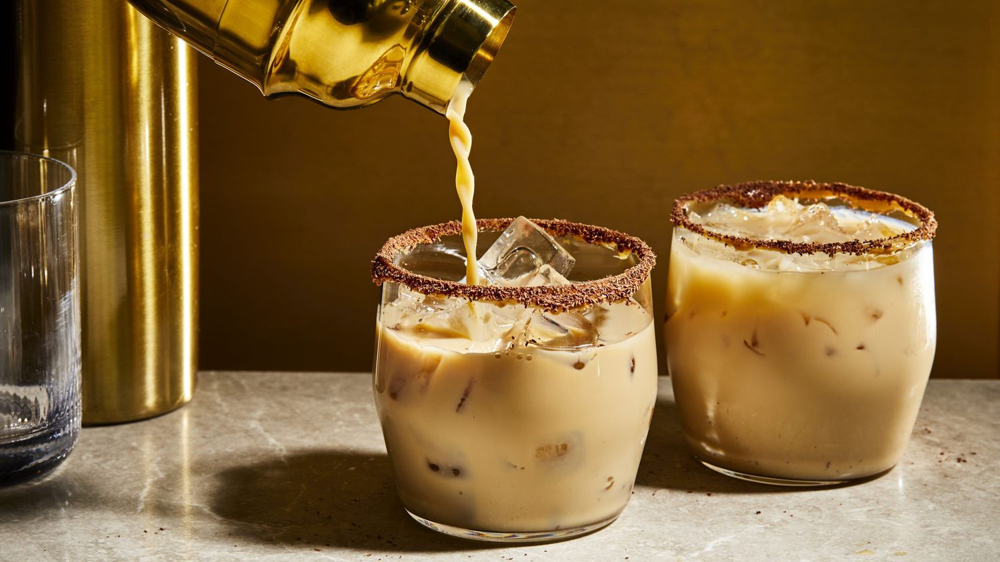

Shrek's Sludgy Swamp

"Step into the enchanting realm of Shrek's Sludgy Swamp, a creamy cocktail that's as rich and indulgent as the swamp itself. This drink is a delightful tribute to everyone's favorite ogre and his unconventional home. Made with a blend of peanut butter whiskey, chocolate liqueur, and milk, it's a delightful concoction that's sure to make you say, 'It's not easy being green...unless you have a glass of this!'
Ingredients
-
2 oz peanut butter whiskey (Skrewball)
-
1 oz chocolate liqueur (Godiva)
-
2 oz milk
-
1 oz chocolate syrup, for rim
-
1 oz chocolate shavings, for rim
Steps
-
Start by pouring 2 oz of peanut butter whiskey, 1 oz chocolate liqueur, and 2 oz milk into a shaker with ice.
-
Shake for 30 seconds to ensure frothiness.
-
Take a glass and rim it with chocolate syrup.
-
Next add chocolate shavings to the rim.
-
Add ice to glass, and pour contents from the shaker.
-
Add ice to glass and pour contents from the shaker.
-
Sip on 'Shrek's Sludgy Swamp,' and you'll be transported to the magical world of Shrek, where the flavors are as vibrant as the characters. Cheers to Shrek, his beloved swamp, and the joy of being your unique self!
Go Back